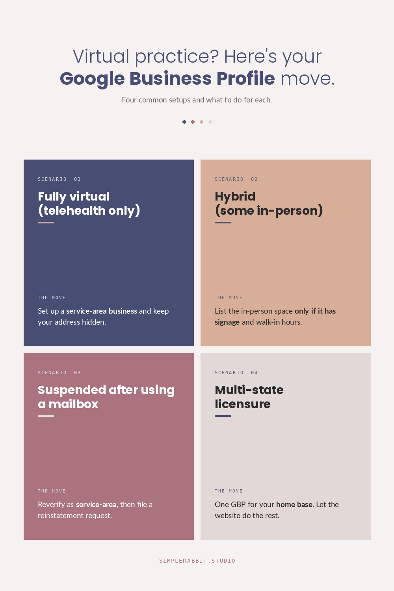

You went to set up your Google Business Profile, and Google asked for an address. You don’t have one. Or the address you put in (your home, a coworking space, a virtual mailbox) got rejected. Or the postcard never came. Or the video verification kept failing because there’s no signage, no waiting room, no building to film.
Meanwhile, the practitioner down the street with an office and a reception desk is in the local map pack, and you’re nowhere.
This is one of the most frustrating spots for a virtual or hybrid women’s wellness practice. You built your practice the way you wanted it (remote, flexible, low overhead) and now the single most important local visibility asset is gatekept behind a physical location requirement that doesn’t match how you actually work.
Here’s the good news, and then here’s the longer answer. Google does allow virtual and service-area businesses on GBP. Not every category, and not without rules, but the door is not closed. Most practitioners who think they can’t get verified actually can. They’re just trying to verify the wrong way.
Why Google treats virtual practices differently
Google Business Profile was built for businesses customers physically visit. Restaurants, dentists, salons, retail shops. The whole verification system (postcards, signage, exterior photos) exists to confirm a business is real and reachable at a specific location. Reviews, the local pack, Maps directions — all of it assumes someone could, in theory, drive to you.
Virtual practices break that assumption. You see patients over Zoom or a HIPAA-compliant telehealth platform. There’s no signage. No exterior. No reception desk. If a patient typed your address into Google Maps, they’d end up at your house or at a coworking space where nobody knows your name.
Google’s response is to put you in a different bucket called a service-area business. A service-area business doesn’t list a public address. Instead, it lists the geographic areas it serves. This is what landscapers and mobile dog groomers use, and it’s also what most virtual healthcare practices should be using.
The catch is that some healthcare categories on GBP require a verifiable physical location. “Medical Clinic,” “Doctor,” and similar in-person categories assume patients come to you. If you pick one of those as your primary category and you have no real office, Google’s verification system flags it and either denies you or unverifies you later.
The four common situations and what to do for each
Most virtual practitioners I talk to fall into one of these. The right move depends on which one you’re in.

Situation 1: Fully virtual, see patients only over telehealth
You have no office. You don’t see anyone in person. Patients book a video appointment, you meet them on a platform, that’s the entire model.
What to do: Set up your profile as a service-area business. In the GBP setup flow, when Google asks “Do you want to add a location customers can visit, like a store or office?” answer no. Then list the service areas (specific cities, counties, or zip codes within your licensed state) where you can legally see patients.
Use your home address for verification (Google will request it), but hide it from the public profile. Google will use the address only to send the verification postcard or run video verification. Your patients will never see it. Your service areas will show instead.
Pick a category that fits virtual care. “Telehealth service” exists. So do specialty categories that don’t require a physical clinic (“Health Consultant,” “Wellness Center,” depending on your scope of practice). The category matters because it tells Google which searches to surface you for.
Situation 2: Hybrid, mostly virtual but you see some patients in person
You see most patients over telehealth, but you have a small in-person presence. Maybe one day a week at a shared medical suite. Maybe a treatment room you rent for procedures.
What to do: If the in-person location is consistent, has signage with your practice name, and patients actually visit it during posted hours, list it as a physical location. That’s your strongest verification path and your best chance at ranking in the local map pack.
If the in-person location is a shared space, a coworking medical suite, or somewhere your name isn’t on the door, do not list it as a public address. Google will eventually catch the inconsistency (no signage in Street View, no exterior photos, conflicting listings at the same address) and suspend your profile. The short-term win isn’t worth the long-term suspension.
In that second case, go service-area only. You can still mention the in-person option on your website and in your GBP description.
Situation 3: You used a virtual mailbox or UPS Store address and got suspended
This is one of the most common mistakes. A practitioner sets up GBP, doesn’t have an office, uses a virtual mailbox or a UPS Store as the address, gets verified, runs for a few months, then suddenly the profile is suspended.
What to do: The fix is to switch to a service-area business model and reverify. Log into your GBP dashboard, find the “Reinstate” option for the suspended profile, and submit a reinstatement request explaining that you are removing the public address and converting to a service-area business. In the same request, update your address to your real address (typically your home), mark it as hidden from public, and add your service areas.
This works most of the time. The reinstatement can take a few weeks. Set the expectation that the profile will be quiet during that window, and don’t use the mailbox address again.
Situation 4: Licensed in multiple states
You hold licensure in more than one state and want to be visible to patients in each of them.
What to do: GBP allows one service-area business per address, and your service areas need to be within reasonable driving distance of the listed address (Google’s guideline is a 2-hour radius). For most multi-state practices, that means picking your primary state for GBP and using other channels (state-specific service pages on your website, paid search, directory listings) for the other states.
There are practitioners who set up additional GBP listings in other states using a family member’s address or a colleague’s office. I do not recommend this. Google’s detection has gotten significantly better in the last two years, and the suspensions are getting harder to reverse.
A clean multi-state strategy is one GBP for your home base, then a website built with proper local SEO for each state you serve. That second part matters more than most practitioners realize.
The piece nobody talks about: a service-area GBP ranks differently
Here is the part that’s easy to miss. A verified service-area business does not show up in the local map pack the same way a physical-location business does.
The local map pack (the three businesses with the map at the top of a Google search) prioritizes proximity to the searcher. If a patient searches “functional medicine doctor near me,” Google ranks the local pack by distance from her location. A service-area business doesn’t have a public location to be near, so it often gets weighted lower in those results.
A virtual practice gets verified, lists its service areas, and still doesn’t show up. The profile is fine. The category is fine. The ranking signal that’s missing is proximity, and there’s no fix for proximity if you don’t have an address.
This is where the website does the work the GBP can’t. For a virtual practice, the local SEO heavy lifting moves to your site: location-specific service pages, content written for the searches your patients actually run, schema markup that tells Google what you do and where you’re licensed, AI-readability so tools like Google’s AI summary and ChatGPT cite you when patients ask “who’s a good telehealth provider for perimenopause in [her state].”
A virtual practice can absolutely rank in local search. It just ranks through the website, not through the map pack. If you’re trying to grow on GBP alone, you’re using the wrong tool for your model.
What I’d do this week if I were you
If your profile is suspended or stuck, in order:
- Decide which of the four situations above you’re in. Write it down.
- If you have a public address that isn’t a real office, remove it and reverify as a service-area business.
- Pick a primary category that fits virtual care, not one that assumes a clinic.
- List your service areas. Be specific (cities and counties), not broad (the whole state).
- Hide your address from the public profile.
- Fill in every other field completely. Categories, services, FAQ, photos, attributes. The fields that don’t depend on location still drive rankings and trust.
Then turn your attention to the website. For a virtual practice, the website is where local SEO actually happens. The GBP is a supporting asset.
I wrote a longer piece on why most Google Business Profiles aren’t getting clicks that covers the eight fields most practitioners ignore. The advice there applies to virtual practices too, with the address situation handled the way I described above.
If you want someone to look at both your GBP and your site together and tell you what to fix, reach out. Most of what’s holding a virtual practice back from being found online is fixable. It just needs the right diagnosis first.